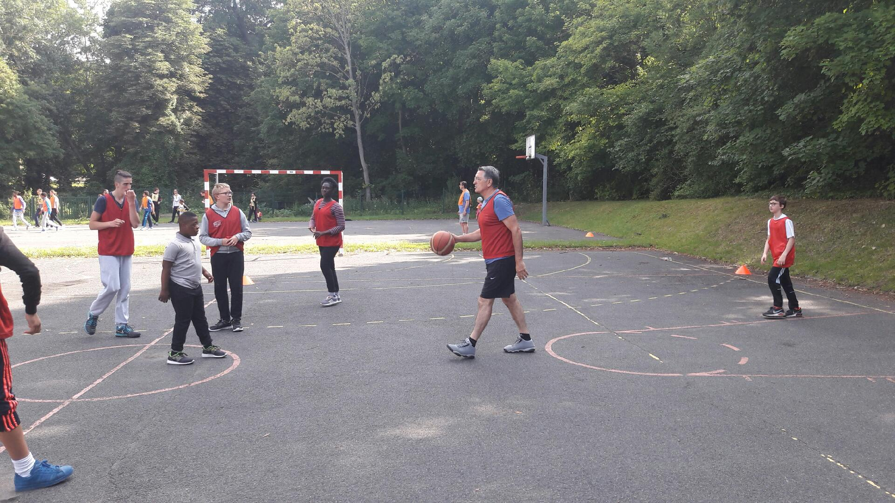
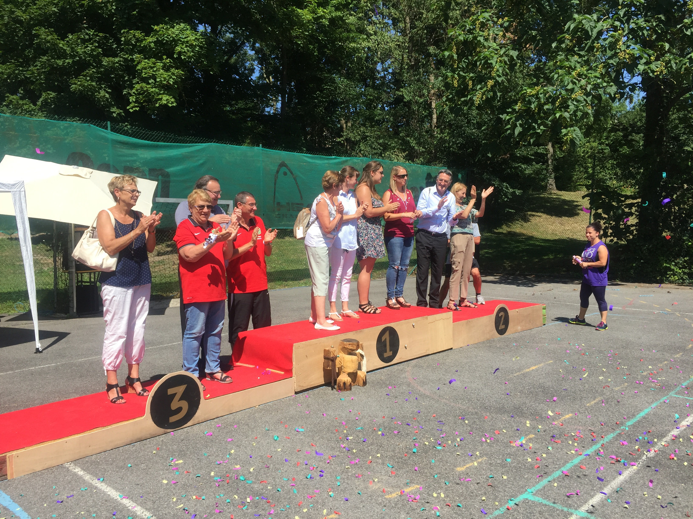

Le sport est un magnifique vecteur de partage, de solidarité et de plaisir.
Le tournoi des sports a été organisé avec brio par Jean-Christophe, maître de cérémonie d’une fête des sports qui aura duré plus de 10 jours du 26 juin au 7 juillet 2017.
Un ou deux sports par jour : tir à l’arc, épreuve de Koh-Lanta, football, et le clou de la semaine a été encore une fois un tournoi de basket-ball qui a mis en compétition 16 équipes de tous horizons (ITEP Frot à Meaux,IME de Livry Gargan et d’Aulnay, ainsi que d’autres établissements Seine et Marnais …)
Avant son départ à la retraite fixé au 23 décembre 2017, Gilles Bouverat avait à cœur de porter la coupe du vainqueur du tournoi de basket qui lui filait entre les doigts depuis plusieurs années.
Avant son départ à la retraite fixé au 23 décembre 2017, Gilles Bouverat avait à cœur de porter la coupe du vainqueur du tournoi de basket qui lui filait entre les doigts depuis plusieurs années.
Il n’en fut rien cette année où la domination sans partage de son équipe (rouge) aura marqué les esprits. Invaincue après 7 matchs, l’équipe rouge marque l’histoire de ce tournoi formidablement organisé et d’un niveau sportif très relevé.

Invaincue après 7 matchs, l'équipe rouge marque l'histoire.

Félicitation à tous les joueurs et bravo à l’équipe d’Alain Hamel qui a participée avec beaucoup de bonne volonté, sans trouver cette fois la réussite.
Mme Pasquier, Présidente du Conseil d’Administration et Mme Tajfel représentante des familles accompagnées de Mme Calonne (« Association Parents en colère ») ont remis avec Malika Haddouche, responsable de pôle éducatif, les médailles et coupes offertes généreusement par le Conseil Départemental de Seine et Marne.
Chacun attend maintenant avec impatience l’an prochain pour un nouveau tournoi des sports.